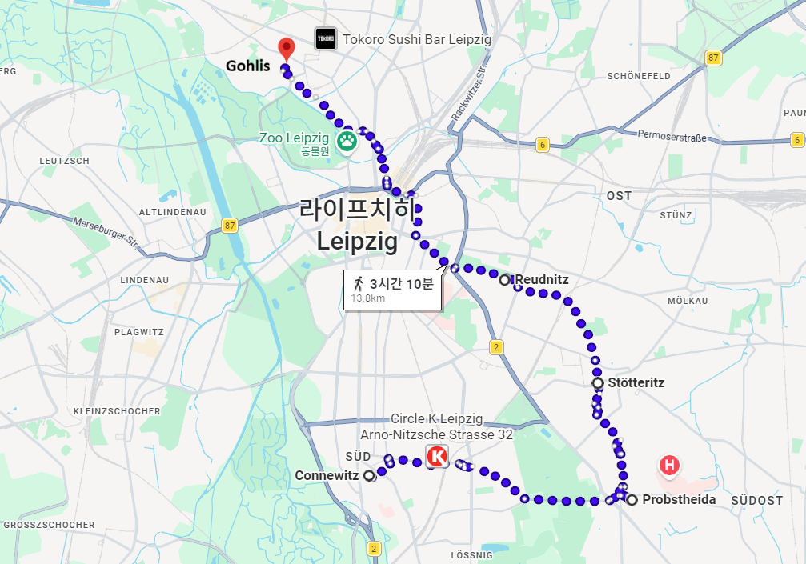
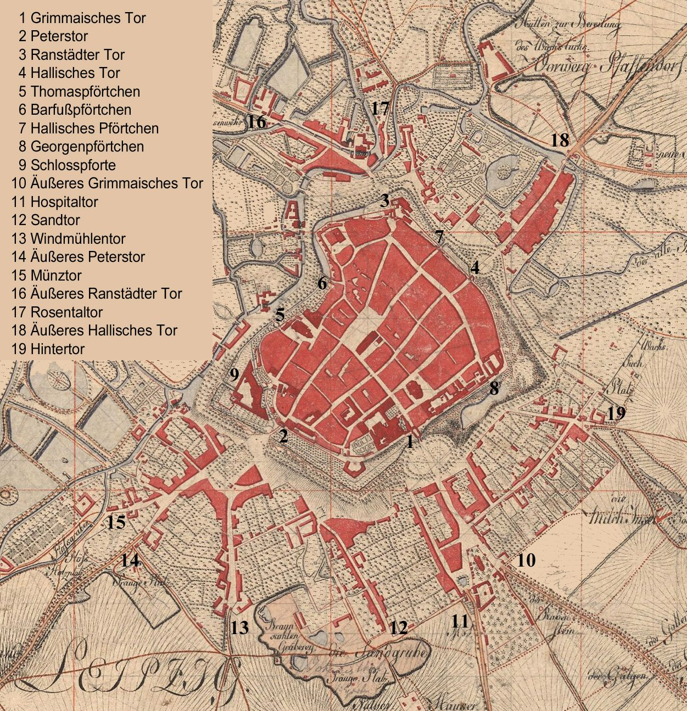
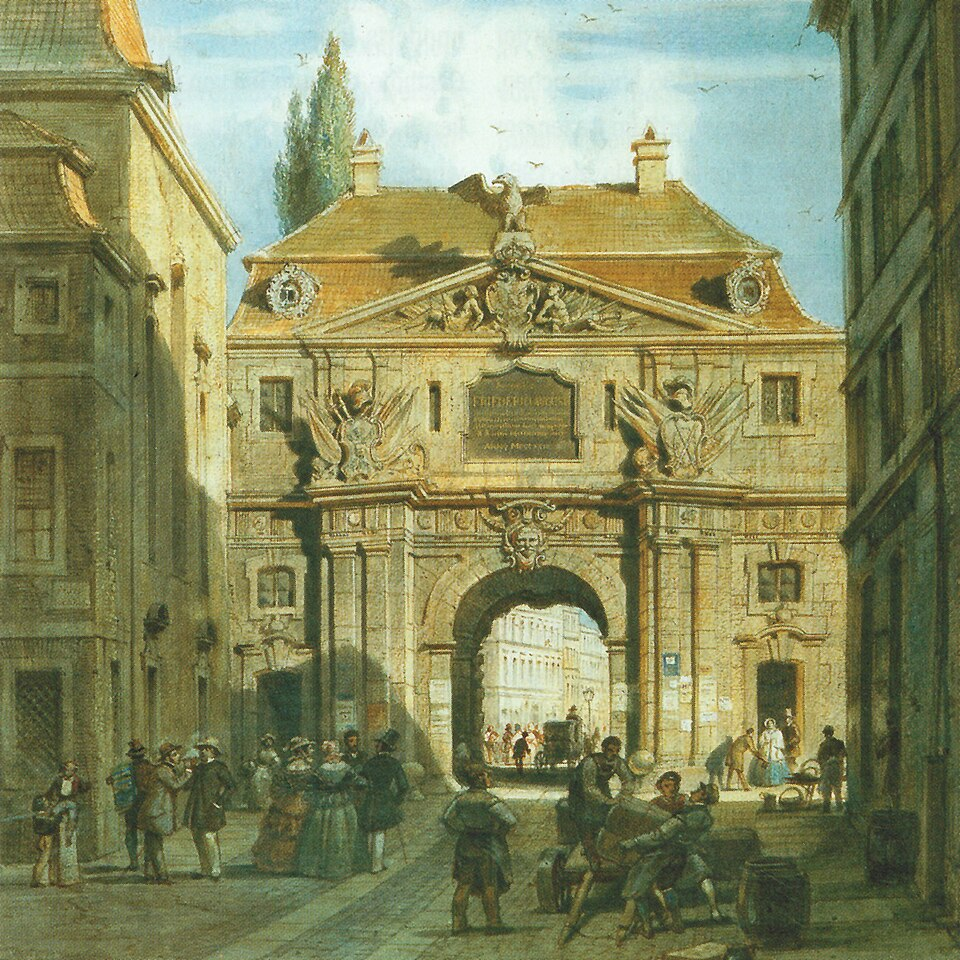
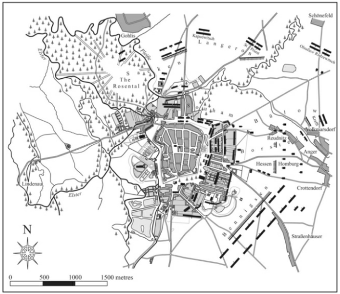
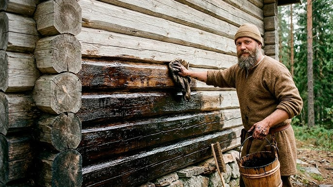
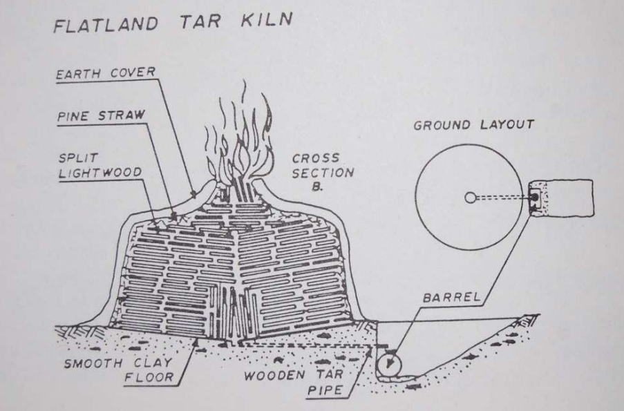
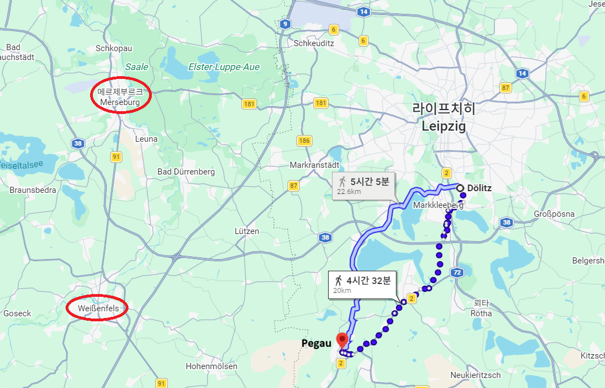

라이프치히 전투 (38) - 간절했던 1승
게시: 2026-03-09T06:30:32+09:00
10월 18일 낮의 전투는 블뤼허가 담당한 북쪽 전선을 제외하고 모든 방면에서 매우 치열했습니다. 블뤼허가 상대적으로 조용했던 이유는 자신의 4개 주력 군단 중 가장 강력했던 랑제론의 러시아 군단을 베르나도트에게 떼어주었고, 또 요크의 프로이센 군단은 16일의 전투에서 큰 손실을 입었기 때문에 적극적인 공세를 취할 수가 없었기 때문이었습니다. 그렇게 전투는 전체 전선에서 치열했지만 슈바르첸베르크의 보헤이마 방면군이 담당했던 남쪽 전선에서는 연합군이 큰 전진을 하지는 못했고, 정작 돌파구가 뚫린 곳은 베르나도트와 베니히센이 함께 공격한 라이프치히 북동쪽 쇤너펠트였습니다. 그래서 나폴레옹의 남쪽 전선도 18일 새벽과 크게 다르지 않게 코네비츠(Connewitz) - 프롭스트하이다(Probstheida) 선을 유지했으나, 프롭스트하이다에서 날카롭게 북쪽으로 꺾여 스퇴터리츠(Stötteritz), 로이드니츠(Reudnitz)를 거쳐 파르터강 북쪽의 골리스(Gohlis)까지 이어졌습니다. 이렇게만 보면 라이프치히 전투에서 공을 세운 것은 베르나도트와 베니히센이고, 슈바르첸베르크와 블뤼허는 아무 공적이 없는 것처럼 보이기까지 합니다.

(18일 밤, 나폴레옹이 쥐고 있던 전선의 모습입니다. 하루 사이에 동쪽 전선이 크게 밀린 것을 보실 수 있습니다.) 10월 18일 밤이 되었을 때, 그랑다르메와 연합군의 병력들은 전투가 대충 끝난 그 자리에서 그대로 버티고 앉아 대치했습니다. 물론 대부분의 병력들은 진짜 최전선보다는 훨씬 후방에 있었지만, 양측의 초병들은 서로 매우 가까운 거리에서 대치하여, 적 보초들끼리 이야기하는 소리가 또렷이 들릴 정도였습니다. 따라서 연합군 초병들의 위치는 라이프치히 구도심에서 2~3km 정도 밖에 떨어져 있지 않았고, 그 정도는 광화문에서 서울역까지의 거리입니다. 즉 사단급 부대들이 대포를 끌고 이동할 경우 그 소리가 어느 정도 들릴 수 있는 거리였습니다. 그런데도 연합군은 나폴레옹이 린더나우를 통해 서쪽으로 탈출 중이라는 것을 명확히 알지 못했습니다. 먼저 그랑다르메의 초병들은 자기들끼리 일부러 소리를 내거나 떠드는 등의 수법으로 연합군 초병들의 신경을 끌고 귀를 가렸습니다. 또 나폴레옹은 후위로 남은 부대들을 19일 새벽 2시경부터 라이프치히 내성과 외성 사이의 교외 지역에 끌어모으면서 전선을 축소시켰는데, 이는 18일 새벽에 했던 전선 축소를 위한 부대 이동과 동일한 것이었으므로 연합군은 이번에도 전선을 축소하는 모양이라고만 생각했지 그랑다르메 전체가 서쪽으로 탈출 중이라는 판단은 하지 못했습니다. 연합군 초병들도 바보는 아니었으므로 라이프치히 시내에서 대규모 부대 이동을 하는지 큰 소란이 벌어지고 있다는 보고가 몇 건 슈바르첸베르크의 사령부로 올라가기는 했습니다. 하지만 그런 보고를 받아들고서도 슈바르첸베르크와 그 참모들은 이게 나폴레옹의 전면적인 후퇴인지, 혹은 수비 준비를 위해 건물의 벽에 총안을 뚫고 바리케이드를 쌓는 등의 작업을 하는 것인지 확신을 하지 못했습니다.

(1800년 당시 라이프치히의 내성과 외성의 각 성문을 표시한 지도입니다. 이 지도는 위쪽이 서쪽입니다. 즉, 나폴레옹의 탈출구는 3번 Ranstädter Tor입니다. 독일어로 문 또는 입구를 tor라고 하는군요.)

(이 그림은 1859년 남서쪽 성문인 페터 성문(Peterstor)의 모습입니다. 아마 란슈테트 성문의 모습도 비슷했을 것입니다.) 실제로 후위로 남은 약 3만의 그랑다르메 부대들에겐 시간이 많지도 않은데 횃불 준비가 안 되어 캄캄한 어둠 속에서 그런 방어 시설 준비를 하느라 요란을 떨며 작업을 했습니다. 이 3만의 병력이 길이 약 4.8km인 라이프치히 구도심의 성벽을 지켜야 했는데, 이는 1m의 성벽을 4~5명이 지키는 비율로서, 10월 18일 전투 때보다 더 밀도가 높아진 셈이었습니다. 이들은 처음부터 구도심을 둘러싼 내성으로 후퇴하여 지키진 않았고, 일단 내성과 외성 사이의 교외 지대의 주택들 및 정원, 밭 등으로 후퇴하여 진열을 정비했습니다. 일부 참모들은 19일 오전에 벌어질 연합군의 진격을 방해하고 내성에서의 수비를 용이하게 하기 위해, 내성과 외성 사이의 교외 지대에 불을 지르자고 제안했습니다. 대부분 벽돌과 석재로 된 교외 지대의 주택들에 효과적으로 불을 지르기 위해, 라이프치히의 공무원들에게 300kg 분량의 타르(tar)를 준비하라는 지시가 내려가기도 했지만, 결국 이는 실제로 준비되지는 않았습니다. 나폴레옹이 그에 대해 '프랑스군이 이런 역사적 대도시에 대해 그런 짓을 저질렀다는 오명을 남길 수는 없다'며 거절했기 때문이었습니다.

(10월 19일 새벽의 양측의 대치 상황입니다.)

(당시 타르는 크게 석탄 타르도 있고 나무 타르도 있습니다만, 1813년 라이프치히에서 타르라고 하면 당연히 나무 타르였습니다. 이런 타르는 목재로 된 건물이나 나무통, 선박, 밧줄 등의 부패를 막고 방수 효과를 내기 위해 많이 사용되었습니다.)

(나무 타르는 기본적으로 나무를 가마에서 구워서 만들었습니다. 이 그림에 표시된 것처럼 잘게 자른 목재를 쌓고 그 위에 이끼, 짚과 함께 두껍게 흙을 덮어 임시 가마를 만든 뒤, 윗부분부터 타들어 가도록 불을 붙여서 만들었습니다. 이렇게 하면 산소가 부족한 상태에서 가마 안이 고열 상태가 되므로 내부의 나무들은 타지 않고 구워져서 타르가 바닥으로 흘러내리게 됩니다.) 어쨌거나, 슈바르첸베르크는 전황이 연합군에게 압도적으로 유리하다는 것을 알고 있었으니 당연히 나폴레옹이 탈출을 시도할 가능성을 염두에 두고 작전을 짜야 했습니다. 게다가 이제 베르나도트의 북부 방면군과 베니히센의 폴란드 방면군이 라이프치히 북동쪽에서 손을 잡았으니 탈출로는 딱 하나, 서쪽 린더나우뿐이라는 것도 분명했습니다. 실제로 슈바르첸베르크는 이미 18일 저녁에 라이프치히 북쪽의 블뤼허에게 전령을 보내 '나폴레옹이 서쪽으로 탈출할 것 같으니 대비하라'고 지시했고, 될리츠(Dölitz)로 불러왔던 귤라이의 오스트리아 제3군단을 페가우(Pegau)로 보내고 플라토프(Platov)의 코삭 기병들을 그날 밤 사이에 플라이서강 및 엘스터강을 건너 서쪽으로 보내, 혹시라도 나폴레옹이 서쪽으로 탈출할 경우 훼방 작전을 펼치도록 했습니다. 그런데, 딱 거기까지였습니다. 그 이외에는 나폴레옹의 탈출을 막기 위한 아무 조치가 없었습니다.

(될리츠로부터 페가우까지는 20km 거리로서, 하루 종일 행군해야 할 거리입니다. 아직 나폴레옹이 메르제부르크로 탈출할지 바이센펠스로 탈출할지 모르는 상황에서, 그걸 막아보겠다고 뤼첸도 아니고 페가우로 귤라이를 보낸 것은 좀 이상하긴 합니다.)
이것을 그저 슈바르첸베르크가 멍청하고 무능한 사령관이었기 때문이라고 탓하기는 어렵습니다. 18일 밤에 벌어진 작전회의에는 짜르 알렉산드르를 포함하여 바클레이 등 러시아군 수뇌부가 다 참석했는데, '19일 날이 밝으면 어제처럼 라이프치히 중심부를 향해 일제히 공격한다'라는 지극히 평범한 결정에 대해 토를 다는 사람이 없었기 때문입니다. 당시 연합군 수뇌부의 입장이 되어 보면 그럴 수도 있겠다 싶기도 합니다. 일단, 연합군은 반드시 라이프치히를 함락시켜야 했습니다. 그래야 이번 전투를 나폴레옹을 패배시킨 완벽한 승리로 만들 수 있기 때문이었습니다. 생각해보면 나폴레옹은 1812년 러시아 원정 이후 계속 수세에 몰린 처지였지만, 사람들이 '그래서 어느 전투에서 나폴레옹을 패배시켰나요?'라고 질문을 하면 답으로 줄 만한 전투가 놀랍게도 하나도 없었습니다. 이 전투에 대해 러시아-오스트리아-프로이센뿐만 아니라 전체 유럽인들이 거는 기대감이 얼마나 큰지 뻔히 아는 상황에서, 일단 확실한 1승을 거두는 것이 무엇보다 중요했습니다. 게다가, 드레스덴에서 '이번엔 확실히 이긴다'라고 설레발을 치다가 역으로 나폴레옹에게 참패를 당한 것이 불과 2달도 지나지 않은 상태였습니다. 뿐만 아니라, 당시 식량 부족으로 고통을 겪고 있던 것은 나폴레옹뿐만이 아니었습니다. 연합군도 식량 사정이 좋지 않았으므로, 여기서 일단 반드시 이기는 것이 중요했을 뿐, 더 나아가 나폴레옹을 폐위시키고 모든 것을 프랑스 대혁명 이전으로 되돌린다는 큰 그림은 아직 연합군 수뇌부에게도 없었습니다. 오스트리아인들과 러시아들인들은 그렇게 그저 1승이 절실하여 나폴레옹에 대한 복수와 응징까지는 생각이 미치지 못했을지 몰라도, 누구보다 나폴레옹에 대해 강렬한 증오심을 가지고 있던 블뤼허는 달랐습니다. 그는 나폴레옹이 서쪽으로 탈출하려 할 수 있다는 통보를 받자, 없는 병력도 쪼개서 그 탈출로를 막으려 했습니다. Source : The Life of Napoleon Bonaparte, by William Milligan Sloane Napoleon and the Struggle for Germany, by Leggiere, Michael V With Napoleon's Guns by Colonel Jean-Nicolas-Auguste Noël https://www.britannica.com/event/Napoleonic-Wars/Dispositions-for-the-autumn-campaign http://www.historyofwar.org/articles/campaign_leipzig.html https://warhistory.org/@msw/article/leipzig-battle-of-the-nations https://www.encyclopedia.com/history/encyclopedias-almanacs-transcripts-and-maps/leipzig-battle-0 https://warfarehistorynetwork.com/article/death-knell-for-napoleons-empire/ https://www.napoleon-series.org/military-info/battles/leipzig/c_leipzigoob10.html https://www.archcon.org/wp-content/uploads/2013/05/Tar-and-Pitch-Production-Sites-Paper.pdf https://en.wikipedia.org/wiki/Leipzig_City_Gates